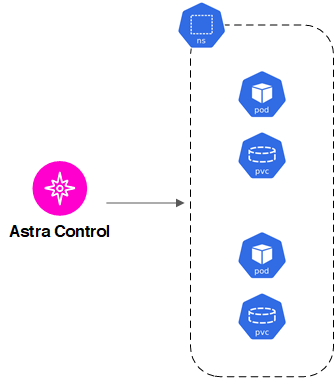
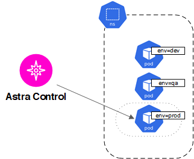
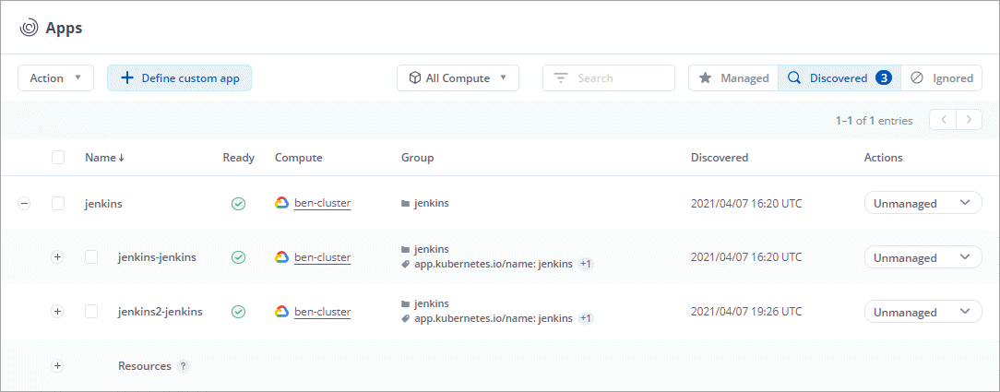
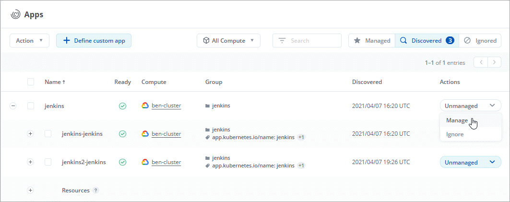
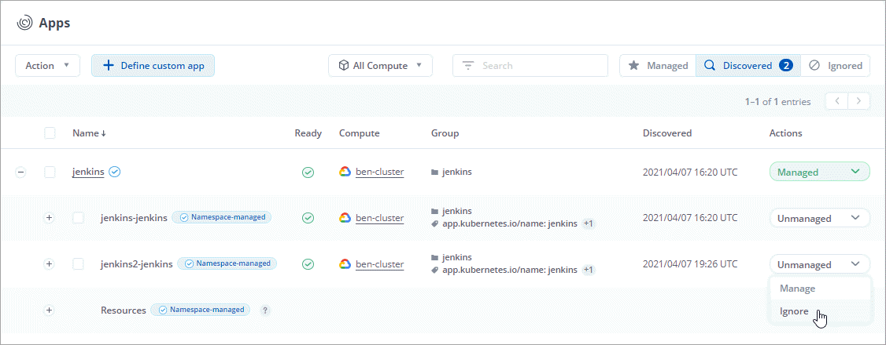

Start managing apps
Contributors
After you add a Kubernetes cluster to Astra Control, you can install apps on the cluster (outside of Astra Control), and then go to the Apps page in Astra Control to start managing the apps.
App management requirements
Consider the following Astra Control app management requirements:
-
Licensing: To manage apps using Astra Control Center, you need an Astra Control Center license.
-
Namespaces: Astra Control requires that an app not span more than a single namespace, but a namespace can contain more than one app.
-
StorageClass: If you install an app with a StorageClass explicitly set and you need to clone the app, the target cluster for the clone operation must have the originally specified StorageClass. Cloning an application with an explicitly set StorageClass to a cluster that does not have the same StorageClass will fail.
-
Kubernetes resources: Apps that use Kubernetes Resources not collected by Astra Control might not have full app data management capabilities. Astra Control collects the following Kubernetes resources:
-
ClusterRole
-
ClusterRoleBinding
-
ConfigMap
-
CustomResourceDefinition
-
CustomResource
-
DaemonSet
-
Deployment
-
DeploymentConfig
-
Ingress
-
MutatingWebhook
-
PersistentVolumeClaim
-
Pod
-
ReplicaSet
-
RoleBinding
-
Role
-
Route
-
Secret
-
Service
-
ServiceAccount
-
StatefulSet
-
ValidatingWebhook
-
Supported app installation methods
You can use the following methods to install apps that you want to manage with Astra Control:
-
Manifest file: Astra Control supports apps installed from a manifest file using kubectl. For example:
kubectl apply -f myapp.yaml
-
Helm 3: If you use Helm to install apps, Astra Control requires Helm version 3. Managing and cloning apps installed with Helm 3 (or upgraded from Helm 2 to Helm 3) are fully supported. Managing apps installed with Helm 2 is not supported.
-
Operator-deployed apps: Astra Control supports apps installed with namespace-scoped operators. These operators are generally designed with a "pass-by-value" rather than "pass-by-reference" architecture. The following are some operator apps that follow these patterns:
Note that Astra Control might not be able to clone an operator that is designed with a “pass-by-reference” architecture (for example, the CockroachDB operator). During these types of cloning operations, the cloned operator attempts to reference Kubernetes secrets from the source operator despite having its own new secret as part of the cloning process. The clone operation might fail because Astra Control is unaware of the Kubernetes secrets in the source operator.

|
An operator and the app it installs must use the same namespace; you might need to modify the deployment .yaml file for the operator to ensure this is the case. |
Install apps on your cluster
Now that you’ve added your cluster to Astra Control, you can install apps on the cluster. Persistent volumes will be provisioned on the new storage classes by default. After the pods are online, you can manage the app with Astra Control.
Astra Control will manage stateful apps only if the storage is on a storage class installed by Astra Control.
For help with deploying common applications from Helm charts, refer to the following:
Manage apps
When Astra Control discovers the apps running on your clusters, they are unmanaged until you choose how you want to manage them. A managed application in Astra Control can be any of the following:
-
A namespace, including all resources in that namespace

-
An individual application deployed with helm3 within a namespace

-
A group of resources that are identified by a Kubernetes label (this is called a custom app in Astra Control)

The sections below describe how to manage your apps using these options.
Manage apps by namespace
The Discovered section of the Apps page shows namespaces and the Helm-installed apps or custom-labeled apps in those namespaces. You can choose to manage each app individually or at the namespace level. It all comes down to the level of granularity that you need for data protection operations.
For example, you might want to set a backup policy for "maria" that has a weekly cadence, but you might need to back up "mariadb" (which is in the same namespace) more frequently than that. Based on those needs, you would need to manage the apps separately and not under a single namespace.
While Astra Control allows you to separately manage both levels of the hierarchy (the namespace and the apps in that namespace), the best practice is to choose one or the other. Actions that you take in Astra Control can fail if the actions take place at the same time at both the namespace and app level.
-
Select Applications and then select Discovered.
-
View the list of discovered namespaces and expand a namespace to view the apps and associated resources.
Astra Control shows you Helm apps and custom-labeled apps in namespace. If Helm labels are available, they’re designated with a tag icon.
Here’s an example with two apps in a namespace:

-
Decide whether you want to manage each app individually or at the namespace level.
-
At the desired level in the hierarchy, select the drop-down list in the Actions column and select Manage.

-
If you don’t want to manage an app, select the drop-down list in the Actions column for the desired app and select Ignore.
For example, if you wanted to manage all apps under the "jenkins" namespace together so that they have the same snapshot and backup policies, you would manage the namespace and ignore the apps in the namespace:

Apps that you chose to manage are now available from the Managed tab. Any ignored apps will move to the Ignored tab. Ideally, the Discovered tab will show zero apps, so that as new apps are installed, they are easier to find and manage.
Manage apps by Kubernetes label
Astra Control includes an action at the top of the Apps page named Define custom app. You can use this action to manage apps that are identified with a Kubernetes label. Learn more about defining apps by Kubernetes label.
-
Select Applications > Define custom app.
-
In the Define Custom Application dialog box, provide the required information to manage the app:
-
New App: Enter the display name of the app.
-
Cluster: Select the cluster where the app resides.
-
Namespace: Select the namespace for the app.
-
Label: Enter a label or select a label from the resources below.
-
Selected Resources: View and manage the selected Kubernetes resources that you’d like to protect (pods, secrets, persistent volumes, and more).
Here’s an example:
-
View the available labels by expanding a resource and selecting the number of labels.

-
Select one of the labels.
After you choose a label, it displays in the Label field. Astra Control also updates the Unselected Resources section to show the resources that don’t match the selected label.
-
-
Unselected Resources: Verify the app resources that you don’t want to protect.
-
-
Select Define Custom App.
Astra Control enables management of the app. You can now find it in the Managed tab.
What about system apps?
Astra Control also discovers the system apps running on a Kubernetes cluster. You can view them by filtering the Apps list.
We don’t show you these system apps by default because it’s rare that you’d need to back them up.
 Request doc changes
Request doc changes Edit this page
Edit this page Learn how to contribute
Learn how to contribute